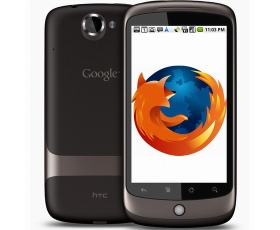

Firefox 24 für Android und Desktop veröffentlicht
Mein erster Artikel mit Boostrap
It uses utility classes for typography and spacing to space content out within the larger container.
Learn moreMobile Version nun mit WebRTC-Unterstützung und Teilen per NFC - Desktop-Version mit kleineren Verbesserungen
Das Release-Rad dreht sich wieder eine Stufe weiter: Mit Firefox 24 hat Mozilla eine neue Version seines Browser zum Download freigegeben. Einmal mehr gibt es dabei sowohl ein Update für die Desktop-Version als auch die mobile Variante der Software.
WebRTC
Die wichtigsten Veränderungen sind dabei bei der Android-Version zu verorten. So wird hier nun WebRTC unterstützt, wodurch Video-Chats ohne jegliche Plugins möglich werden. Damit folgt man in kurzem zeitlichen Abstand zu Chrome für Android, wo es dieses Features auch erst seit wenigen Wochen gibt. Bei beiden Browsern unterstützen auch die Desktop-Versionen mittlerweile WebRTC.
NFC
Ebenfalls neu ist die Unterstützung von NFC für das Weiterreichen von Tabs an andere Smartphones und Tablets. Dazu kommt noch eine dunkle Ansicht für das nächtliche Lesen von im eingebauten Reader abgespeicherten Artikeln. Außerdem gibt es jetzt einen eigenen Quick-Share-Eintrag im Menü, mit dem jener Service, mit dem am öftesten Seiten geteilt werden, ohne weitere Zwischenschritte zur Verfügung steht.
Desktop
Deutlich weniger spektakulär ist das Update der Desktop-Version, bei der man sich dieses Mal vor allem auf den Feinschliff konzentriert. So ist eine Option zum gleichzeitigen Schließen aller Tabs rechts vom ausgewählten hinzugekommen, unter aktuellen OS-X-Versionen werden nun die richtigen Scrollleisten verwendet.
Sicherheit
Zu all dem kommen die gewohnten Verbesserungen an Performance und bei der Unterstützung aktueller Webstandards. Da auch wieder einige kritische Sicherheitslücken geschlossen wurden, empfiehlt sich ein zügiges Updates.